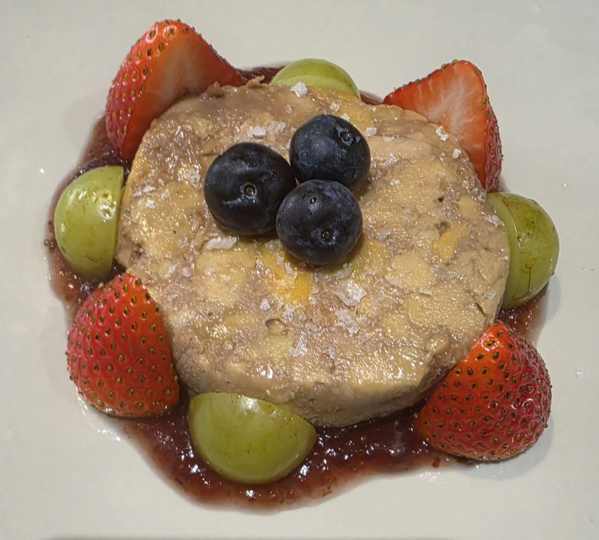
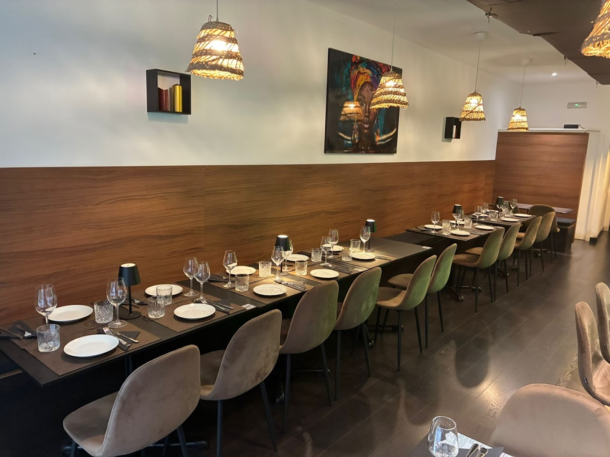
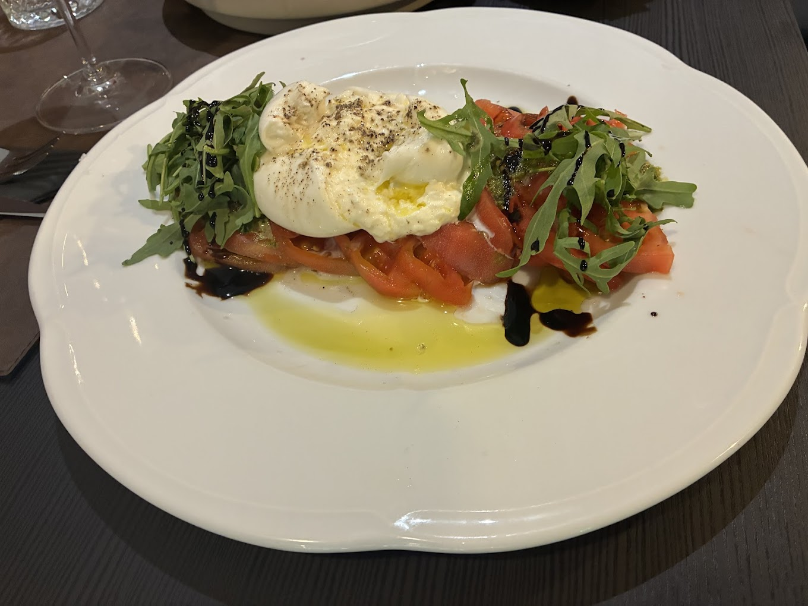
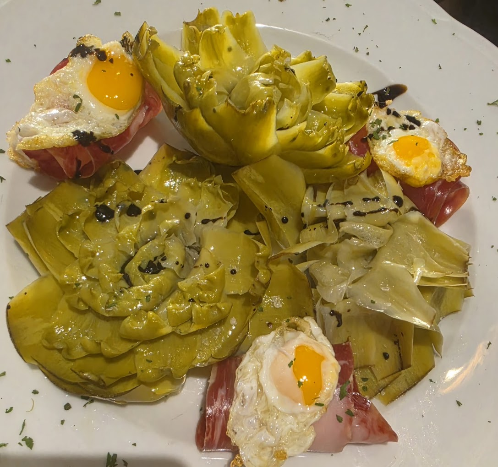
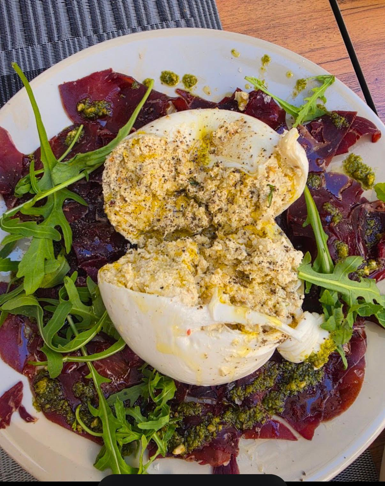
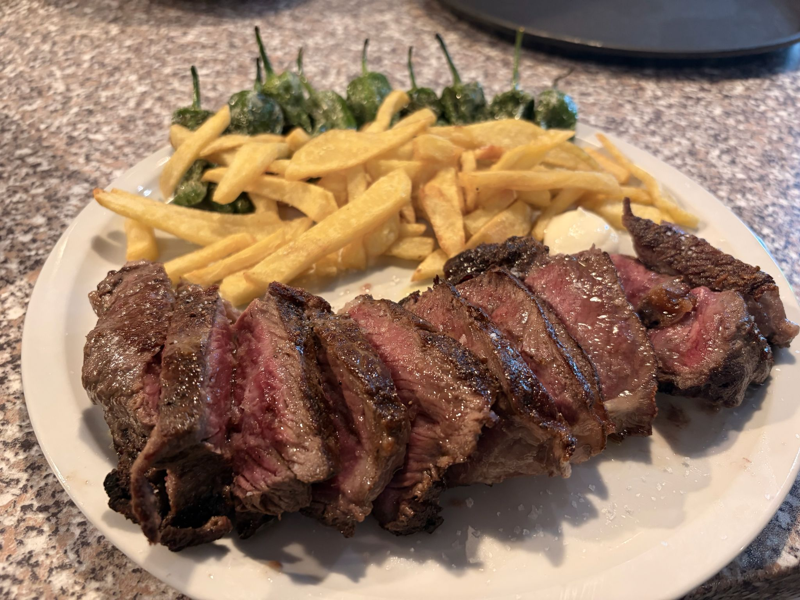
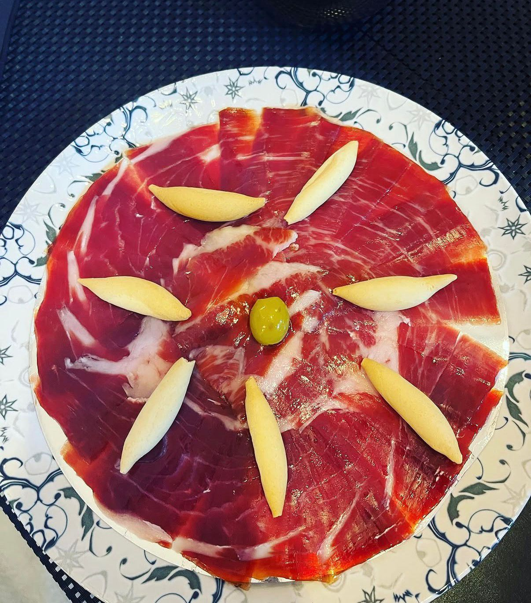

Micuit de foie casero
Elaboración propia, con pan tostado y compota de fruta. Suave y goloso.
Entrantes
17 €
Tapas, ensaladas de tomate rosa del Perelló, mariscos, carnes y, los viernes, cocido madrileño. En pleno corazón de L'Eixample.
Arantxa es un restaurante de barrio donde se seleccionan los productos manualmente cada día: tomate rosa del Perelló, jamón ibérico, pescado fresco y carnes seleccionadas. Recetas tradicionales, raciones generosas y un ambiente que te hace sentir como en casa.
Una carta corta y honesta, una bodega de vinos de denominaciones de origen españolas y, los viernes, nuestro cocido madrileño completo por 25 €. Eso es Arantxa.

Un anticipo de lo que cocinamos cada día. La carta completa está en la página dedicada.

Elaboración propia, con pan tostado y compota de fruta. Suave y goloso.

Tomate rosa del Perelló con burrata, pesto y rúcula. Joya valenciana de temporada.

Con jamón ibérico y huevos de codorniz. Producto fresco de la huerta.

Con burrata de pistacho, pesto y rúcula.

A la brasa y trinchado, con patatas y pimientos de padrón.

Cortado a cuchillo. En tabla mixta con queso curado.
Selección extraída de Google (5 ★ sobre 5 con 57 opiniones).
«Me ha encantado el restaurante. Íntimo, acogedor y elegante, además tiene una terraza muy agradable con sol. Toda la comida, excelente y a muy buen precio. Las bravas, las mejores que he comido, y la ensalada de tomate rosa del Perelló con burrata y el micuit de foie son un espectáculo.»
«La ensalada de tomate rosa con pesto y burrata estaba perfecta. Luego pedí un entrante a la plancha que estaba suave como una almohada y muy sabroso. Lo recomiendo y sin duda volveré.»
«Maravilla de atención y calidad de la comida. Recomiendo el cachopo, el tartar, las bravas Arantxa, un buen vermut y un buen vino. Encantada — repetiré cada vez que pase por el barrio.»
«Restaurante nuevo en la zona. Me pasé con la familia para probar y nos gustó muchísimo, seguro que repetiremos. Especialmente recomendable la tosta de foie y la ensalada de tomate rosa del Perelló. Muy buen producto y buen servicio.»
En cumplimiento del artículo 10 de la Ley 34/2002, de Servicios de la Sociedad de la Información y de Comercio Electrónico (LSSI-CE), se informan los datos del titular de este sitio web:
Titular: María Aranzazu Esteban Montero (empresaria autónoma)
NIF: 01928576A
Actividad: Restaurante · «Restaurante Arantxa»
Domicilio: Carrer de Joaquín Costa, 50 · 46005 València
Contacto: aranchaesteban@icloud.com · +34 663 209 793
El acceso a esta web es gratuito y atribuye la condición de usuario, que se compromete a utilizar sus contenidos conforme a la ley y la buena fe. Los platos, precios y disponibilidad mostrados son orientativos y no vinculantes hasta su confirmación en el restaurante.
Los contenidos de este sitio (textos, fotografías, logotipos y marcas) son titularidad de María Aranzazu Esteban Montero / Restaurante Arantxa o de sus licenciantes, y están protegidos por la normativa de propiedad intelectual e industrial. Queda prohibida su reproducción o uso sin autorización.
El titular no se responsabiliza de los daños derivados de un uso indebido de esta web ni de los contenidos de sitios externos enlazados.
Este aviso se rige por la legislación española. Para cualquier controversia serán competentes los juzgados y tribunales de València, salvo que la normativa de consumo aplicable establezca otro fuero.
Conforme al Reglamento (UE) 2016/679 (RGPD) y a la Ley Orgánica 3/2018 (LOPDGDD), te informamos sobre el tratamiento de tus datos personales.
María Aranzazu Esteban Montero · NIF 01928576A · Carrer de Joaquín Costa, 50, 46005 València · aranchaesteban@icloud.com
Esta web es meramente informativa y no almacena tus datos en servidores propios. Las reservas y consultas se gestionan por WhatsApp, teléfono o correo electrónico; solo tratamos los datos que nos facilites por esos canales (nombre, teléfono, email y detalles de la reserva) con la finalidad de atender tu solicitud.
El consentimiento que prestas al contactarnos (art. 6.1.a RGPD) y la aplicación de medidas precontractuales a petición tuya (art. 6.1.b RGPD).
Conservamos los datos el tiempo necesario para gestionar tu reserva o consulta y, posteriormente, durante los plazos legalmente exigibles; después se suprimen.
No cedemos tus datos a terceros salvo obligación legal. Si escribes por WhatsApp, la comunicación se rige además por la política de privacidad de WhatsApp/Meta.
Puedes ejercer tus derechos de acceso, rectificación, supresión, oposición, portabilidad y limitación escribiendo a aranchaesteban@icloud.com. Si crees que no se han atendido correctamente, puedes reclamar ante la Agencia Española de Protección de Datos (www.aepd.es).
Usamos el mínimo imprescindible. Desde el aviso de cookies puedes «Aceptar todo» o «Solo necesarias», y cambiar tu elección cuando quieras con el enlace «Administrar cookies» del pie de página.
Almacenamiento técnico en tu navegador (localStorage) para recordar el idioma y tu preferencia de cookies. Son imprescindibles para el funcionamiento del sitio, no se comparten con terceros y no requieren consentimiento.
El mapa de la página «Dónde estamos» solo se carga si aceptas estas cookies. Al hacerlo, Google puede instalar sus propias cookies, sujetas a la política de privacidad de Google. Si eliges «Solo necesarias», el mapa no se muestra; en su lugar verás un botón para activarlo puntualmente.
No utilizamos cookies de publicidad ni de analítica de comportamiento.
Puedes cambiar tu consentimiento con «Administrar cookies» (pie de página) o borrar y bloquear las cookies desde la configuración de tu navegador en cualquier momento.